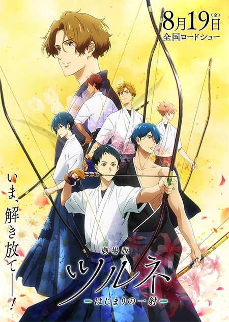
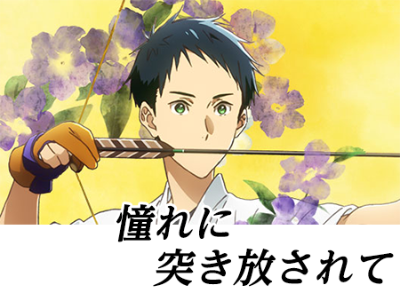
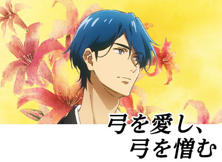
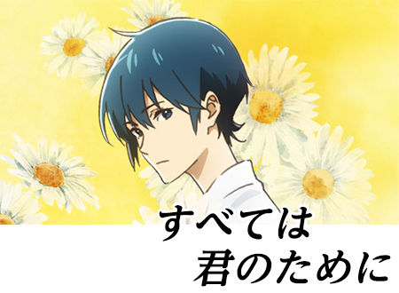
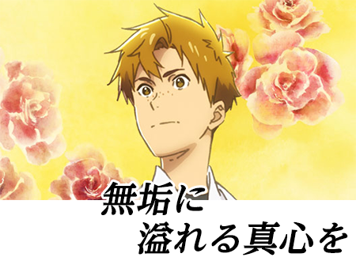
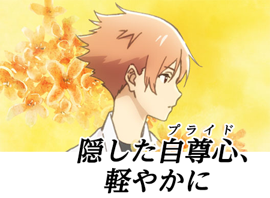
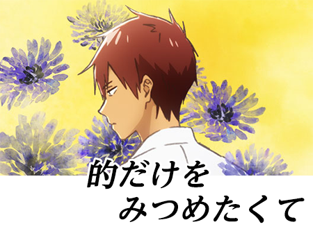

連盟からのお知らせ
「劇場版ツルネ ーはじまりの一射ー」作品紹介
弓道をテーマにしたアニメ映画「劇場版ツルネ ーはじまりの一射ー」が8月19日から公開になります。綾野ことこの同名小説。弓道を志すすべての人におすすめの映画です。
作品紹介

「弦音」＝ツルネ
矢を放ったときに鳴る弦の音。射手にとって美しい弦音を響かせることは喜びであり、その美しい音は人の心をとらえて離さない。
同一人物が同じ道具を使ったとしても同じ弦音を発することはできず、まさに一期一会。一射一射が、一生に一度の〈出会い〉と〈別れ〉である。
果てのない弓の道を歩み始める高校生たちの青春〝弓道〟アニメーション！
アニメーション制作：京都アニメーション／配給：松竹／製作：ツルネ製作委員会
あらすじ
鳴宮湊は、弓引きの病とも言われる「早気」にかかり、弓道から身を引くことにした。
高校に進学後、親友の竹早静弥が弓道部に入ると言っても、湊の気持ちは変わらない。
だが、滝川雅貴と運命的な出会いを果たし、湊は傷つきながらも再び弓を手に取る。「弓道部に戻って、いろいろなものが見えてきた気がするんだ」
雅貴は湊を指導する一方で、自分の師匠に深い復讐心を抱いていた。「俺は、あいつみたいな師匠にはならない」
ともに歩み始めた雅貴と湊。これまで湊を支えてきた静弥は、自分はもう必要のない存在だと思い始める。「僕は、滝川さん。あなたが嫌いです」
弓への苦しみにもがき続ける湊、師への愛憎にさいなまれる雅貴、友への想いに追い詰められる静弥。彼らが、たどりつく先は―――。
キャラクター紹介

鳴宮 湊
CV. 上村祐翔
「美しい弦音を響かせたい」という想いで弓道を始める。早気が原因で弓道を辞めていたが、雅貴の射に出会い、再び弦音を取り戻そうと風舞高校弓道部へ入部する。

滝川雅貴
CV. 浅沼晋太郎
弓の師匠であった祖父に憧れ、弓道を続けてきた。夜多神社の神主を務めるかたわら、風舞高校弓道部のコーチとして湊たちを導く。

竹早静弥
CV. 市川 蒼
湊の幼馴染。風舞高校では弓道部の部長を務め、冷静沈着に部員たちを支える。

山之内遼平
CV. 鈴木崚汰
風舞高校弓道部1年。高校から本格的に弓道を始めた初心者。争いを好まず真心で接する。

如月七緒
CV. 矢野奨吾
風舞高校弓道部1年。人目を引くルックスと朗らかな人柄。海斗の従兄弟。

小野木海斗
CV. 石川界人
風舞高校弓道部1年・副部長。人一倍真面目に弓道と向き合い、情に厚い一面も持つ。